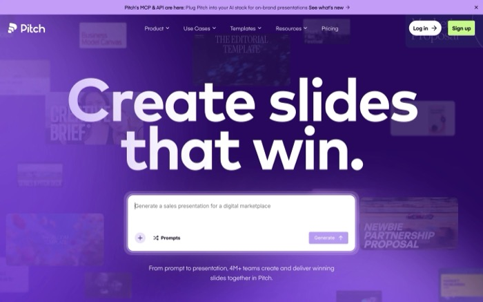
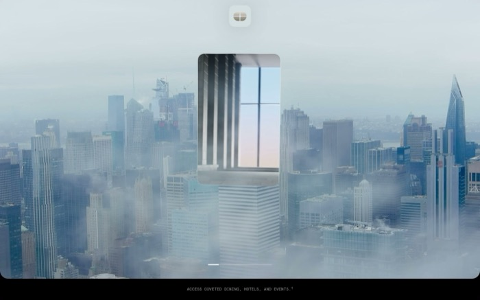
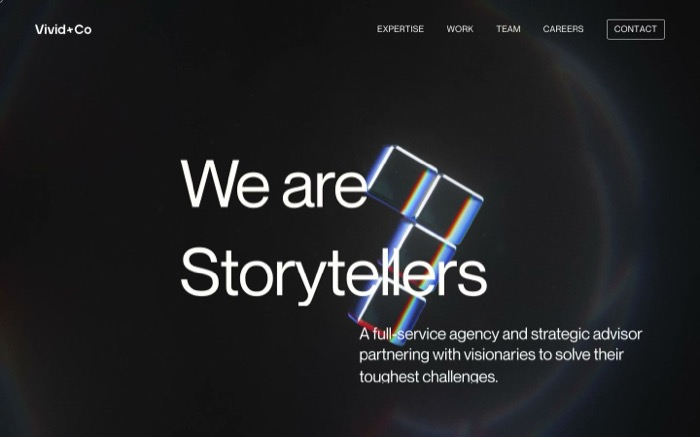
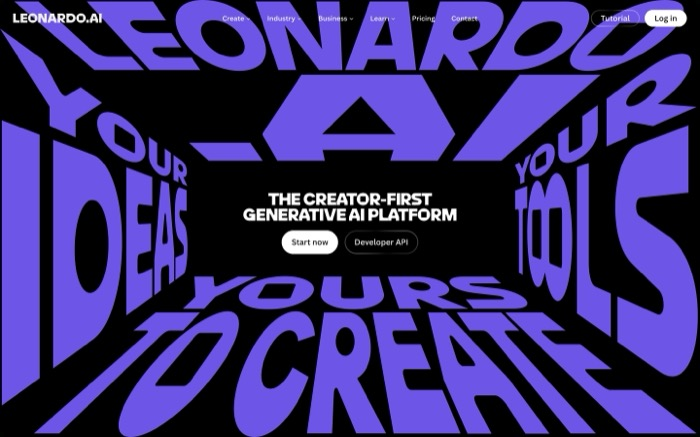

Bunny World · landing · palette · 2026-11-15
Taken from the logo itself, not from one site: clean (warm white type, plenty of dark room), fast (one hot spark that comes and goes) and the disco ball (a mirror-silver mark on a deep plum night). Each colour comes from a different Refero palette.
The whole hero sits on it. Warmer and redder than tech blue or violet.
The bunny mark only: light, shadow and glint, like a mirror ball.
Headline, chips and the Try button. The trust layer stays plain.
Lede, labels, prices' small print.
Sparkles and the glint only. Never on prices, chips or buttons.

Purple stagecraft.
The deep purple-black stage, warmed to plum, with lilac for quiet text.

Reflected worlds.
Silver and reflection carry the light, not colour. That's our mirror-ball mark.

Warm white on near-black.
Warm white statements, with spectral light kept to the object.

Hot-pink interruption.
One electric pink as a brief interruption. For us it's the spark and nothing else.